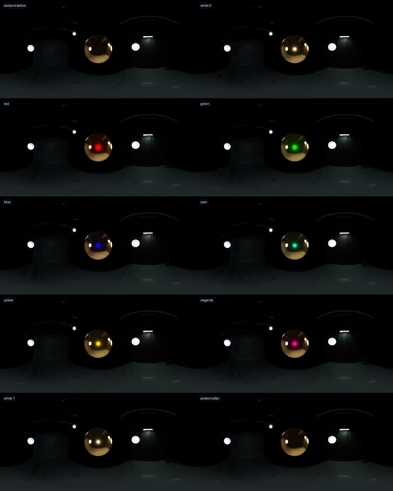
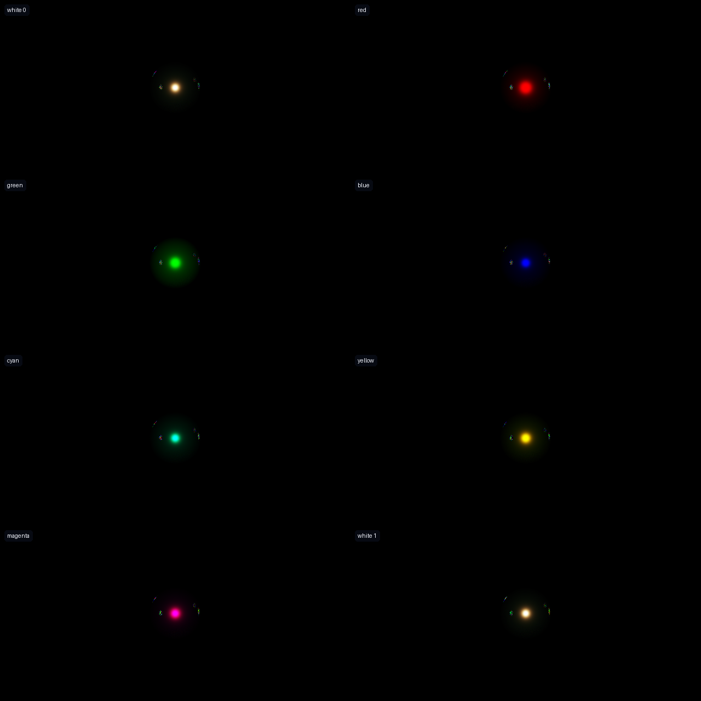
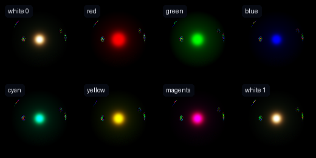
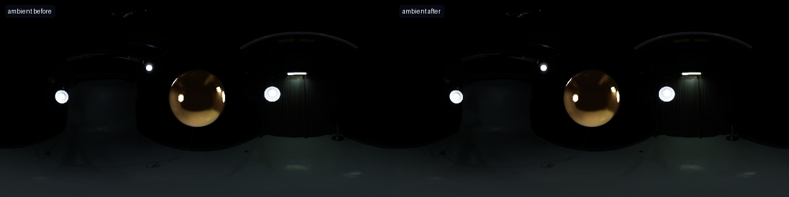

Separate the object from the room.
A copper-like metallic sphere is rendered inside a real studio HDRI. A 360 camera captures ambient-before, the synchronized W/R/G/B/C/Y/M/W burst, and ambient-after as complete equirectangular HDRIs. PNGs on this page are previews only.
One stationary pose, ten HDRIs
Every state is already a full 360° × 180° environment capture. The tracked sphere occupies one region inside each panorama.

After optical cancellation
The room reflections disappear from the linear difference, leaving the response generated by the known active light.

The selected surface is a region inside the HDRI
Segmentation supplies the equirectangular mask. Material fitting reads only this tracked region while the remainder records the local environment.

The local light is captured directly
The before and after panoramas are the local HDRI observations. They bracket illumination drift and are interpolated at every flash timestamp before subtraction.
